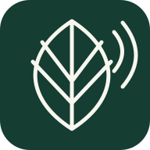

同一颗地球，接着转下去029
DOT/AIR 1.1，让下一程沿着地球展开。
Orbital Earth 1.1 已上线。Windows 让巨型红色地平线从窗口底部升起，Web 保留自己的完整球面；19,717 个更大的波点和 7,918 个机场节点，让目的地有了真实坐标。出发、到达与行程沿同一颗地球连接，理论大圆航线支持播放、暂停、拖动进度和模拟速度；换一个机场，从当前姿态继续。
航线为理论地理示意，模拟不是真实航迹；航空库存、可售票价与出票仍未开放。
近况与进展
记录正在做的事，也记住每一次开始。
Orbital Earth 1.1 已上线。Windows 让巨型红色地平线从窗口底部升起，Web 保留自己的完整球面；19,717 个更大的波点和 7,918 个机场节点，让目的地有了真实坐标。出发、到达与行程沿同一颗地球连接，理论大圆航线支持播放、暂停、拖动进度和模拟速度；换一个机场，从当前姿态继续。
航线为理论地理示意，模拟不是真实航迹；航空库存、可售票价与出票仍未开放。
今天让 DOT/AIR 飞进 Gallery。沿用软件的朱红、黑白波点和宽体字，把真实地理点云做成一颗持续自转的地球：选择机场，同一颗球转向新的坐标。机队图鉴、公共空域资料与 Flight DNA，让航空兴趣和个人偏好都有自己的位置；Web 与原生 Windows 工作台共用账户。
公共航空资料版 0.1.0；可售航班与票价尚未接入供应商，不提供预订或出票。
今天把我的 INJAZ 商赛作品 NABAT 放进校园实验室。一个 NFC / QR 身份，连接植物的照片、观察与照护历史；现场的移动端和 NABAT 1.1 原生 Windows 工作台，让目录、任务、地点、标签与影像对照继续围着同一株植物生长。象牙白、植物绿和编辑式字形，像一本安静但一直在更新的生长手账。
展柜植物与软件演示数据为合成样例；物理 NFC 写入和可信签名安装尚未验证。观察保存与外部分析可用性分别处理。

NABAT.INJAZ / A LIVING RECORD给自己的互联网小角落换了一身新衣服。更明亮的多巴胺配色、更自由的字图排版，还有会回环的流线与雕塑。每件作品保留自己的风格，文字有了更舒服的留白；个人介绍、展柜、近况与随笔，也沿着同一条河连了起来。新的流域索引让下一站更好找。
Temporal Edition 为 23 站整理了 115 个 UTC 场次。访客能先看公开赛程与倒计时，免费 Motorsport Identity 可进入完整 Race Weekend Hub：从场次动态、赛道摄影与快速投稿，到赛后封存和回放，都沿同一条时间线前进。公开实验室可以体验不同周末状态，模拟计时与天气会明确标注。
完整周末动态需免费账户；提供方暂不可用时保留最近可靠状态。这是计时与影像语境，不是视频直播。
9 月 24 日开始研究 Neural Radiance Fields。今天把 NeRF Research Console 正式公开。
256 rays/batch；选定视角评估。
Community Discovery 把有署名的赛车影像排成每日编辑首页。首期《The Geometry of Suzuka》精选六张 Martin Lee 的铃鹿作品，《Six Lines Through Suzuka》则是一册已公开的六帧收藏。风格索引、关注流、趋势与活动通知把影像继续带到人们面前；另有 17 张核对来源的开放许可照片加入档案。
当前公开内容由有来源的档案照片与已发布策展组成；社区活动数量只按真实记录显示。
铃鹿照片：Martin Lee / CC BY-SA 4.0
Circuit Explorer 把 23 条赛道轮廓与 139 个地点接进影像档案。点选弯角就能看实际照片与摄影者，沿位置筛选和分享；新投稿可标注拍摄地点，个人档案与护照也会呈现由已发布照片形成的赛道足迹。没有依据的位置不会被猜出来。
地图位置是赛道示意坐标，不是精确机位或观赛通行指引；空地点继续显示为空。
日本站影像：Formula 1 media · 赛道轮廓：F1DB / CC BY 4.0
在 1.1 的赛季关系网之上，加入 Motorsport Identity。车迷可以用邮箱建立身份，把新照片放进有归属的档案，保存喜欢的画面、整理收藏、关注摄影者，并把亲临的分站盖进赛季护照。公开署名与私密账户分开，安全中心提供会话管理和 TOTP 双重验证。
原有影像与来源保留；赛事和积分仍是 2026.09.27 的资料快照。
把分站、赛道、场次、车队、车手、摄影者、位置与照片接成可追索的关系。23 站常驻赛季轨和 Ctrl / ⌘ K 搜索让入口随时可见；多维筛选能分享，照片能在原画面上展开，也能用独立链接打开。新增六张核对来源的影像与有署名的赛道轮廓。
赛事与积分仍沿用 2026.09.27 资料快照；赛道位置只写已核实的关系。
把 2026 赛季做成一座可以穿行的影像档案：23 个分站、11 支车队、当前 22 位车手与有署名的照片彼此相连。碳黑、信号红、胶片颗粒与压缩大字让速度有了形状；公开站点也欢迎车迷带着地点、故事和署名分享自己的画面。
赛程与积分为 2026.09.27 的资料快照，不是实时计时。AfterImage 为独立非官方车迷项目。
这次，给四季工坊多开了一扇门。647 款车型、内容更新，以及两张记录成长的嘉年华通行证。
今天，把 Horizon Festival Toolkit 0.1.1 放进了作品集。一个围绕 FH6 季节赛记录、选周修改和备份恢复的 Windows 小工具。薄荷绿铺开底色，淡蓝像天空，粉色像嘉年华的入场腕带。第四件作品，继续把赛车、代码和设计放在一起。
今天，把 AXIOM · 格物带到了线上。一个属于科学实验、数学和物理的工作台：导入数据，画出关系，研究拟合与误差，再把结果带走。冷白、墨黑、荧光黄绿与钴蓝，像一本被打开的实验记录。我的第三件作品，也是在 IB 学习路上，为自己的好奇心做的一件工具。
今天，Folio 翻到了 1.1。给 Forza Horizon 6 做了专属作品库，让部署前的预览、原文件备份与还原更有条理；也把 Nexus 书房带进手帖，连接个人 API Key，浏览、下载、关注更新。喜欢的纸色、陶土和留白都还在，软件里多了一本版本手记，记住每一次生长。
Nexus SSO 尚未开放；真实账号、线上下载与游戏内兼容性尚未完成验证。
从篮球游戏，到整理游戏的工具。Folio · 模组手帖 1.0 正式发布：用奶油纸、陶土色和出版物般的排版，为游戏与 Mods 做一间安静的收藏工作室。支持 NBA 2K27 专项归档、文件树、ZIP 导入预览与停用恢复，并提供 Windows 安装版和免安装版。
翻开 Folio 的展柜NBA After Hours，是我的第一个正式项目。把看 NBA、打篮球和玩 2K 的热爱，写成一款可以直接在浏览器玩的 3D 街机篮球游戏。30 支球队、3v3 与 5v5、冠军之路和本地双人对战，都从这一次「试试看」开始。今天，也把它放进 GitHub 和自己的 Gallery。
进入第一个项目的展位今天，为个人主页做了一个私人唱片架。收进 9 位喜欢的歌手、84 首歌曲，也为最爱的《守村人》和《七里香》留了专属位置。真实的头像和封面，配上随机轮播、歌手筛选与中英文切换，让这个空间又多了一点自己的样子。
QQ 音乐跳转入口已接入，主页内播放仍在探索中。
逛逛我的音乐宇宙在迪拜的 GEMS Wellington International School 开始 IB 阶段，成为一名 Year 12 学生。带着对计算机工程和空气动力学的向往，继续学习。
开始接触 Agents，探索 AI 能怎样帮我实现想法。这份好奇心，后来延伸到 AI 趋势与神经网络的学习。